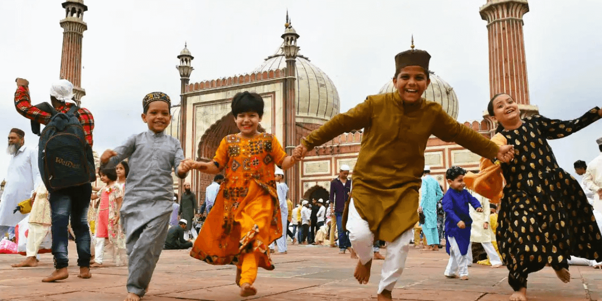
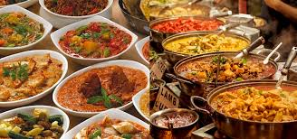
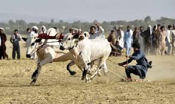
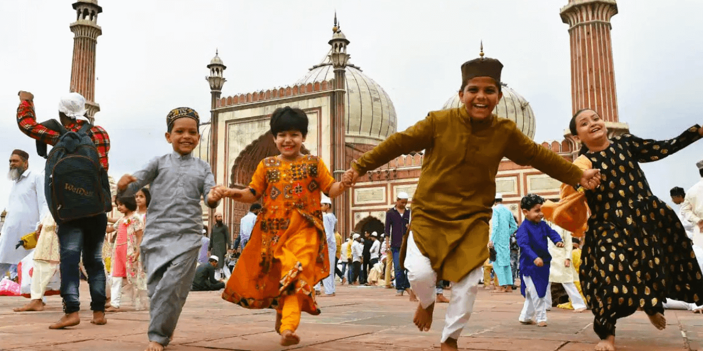
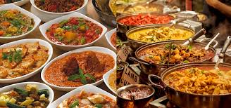
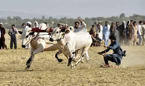

Pakistan a Country
Rich with Culture
Pakistan is a country rich with culture, shaped by its ancient civilizations, diverse traditions, and deep historical roots. From the colorful festivals of Sindh and Punjab to the majestic mountains of Gilgit-Baltistan, every region reflects a unique cultural identity. Its music, poetry, art, and cuisine represent a blend of Islamic heritage and local customs passed down through generations. The warmth and hospitality of the people, along with the vibrant languages, dresses, and crafts, make Pakistan a land of cultural beauty. Despite challenges, its strong cultural values and unity continue to inspire pride and attract interest from people around the world.


 





Everything Our Culture Represents
Makes Our Culture Unique
Expo 2020 Dubai
Date & Venue: Expo 2020 (actually held 2021-2022 due to COVID), Dubai, UAE.
Representation Topic: This pavilion showcased Pakistan's cultural richness — crafts,
traditional art, regional cuisines, and architecture.
MANZAR: Art
& Architecture
Date & Venue: 1 November 2024 - 31 January 2025, at the National Museum of Qatar, Doha.
Representation Topic: A major exhibition of over 200 works (paintings, photographs, installations, architectural models) tracing Pakistani art and architecture from the 1940s to today.
Pakistan-China Fashion
Show at the Great Wall
Date & Venue: 19 October 2025, Badaling (Great Wall), Beijing, China.
Representation Topic: A cultural-diplomacy fashion event where Pakistani designers (e.g., Maheen Khan, Moazzam Abbasi) presented collections merging Pakistani traditional designs with Chinese aesthetics.
Expo 2025 Osaka
Date & Venue: Expo 2025, Osaka, Japan. (Closing ceremony was October 13, 2025.)
Representation Topic: The pavilion highlighted Pakistan’s cultural heritage, mineral resources (notably pink rock salt), innovation, and trade potential.Its theme was “Universe in a Grain of Salt,”.
Fashion Show :
Paris
Date & Venue: 29 September 2024, Embassy of Pakistan, Paris, France.
Representation Topic: A multi-designer, multicultural fashion show (“Spring Summer 2025 Paris”) showcasing Pakistani heritage, craftsmanship, and rural women artisans, as part of diplomatic cultural outreach.
Documentary Film :
“Indus Blues”
Date & Venue: Premiered August 2018 at the Regina International Film Festival, Canada.
Representation Topic: The film documents dying traditional folk and classical musical instruments of Pakistan and the struggle of musicians and craftsmen to preserve cultural heritage.